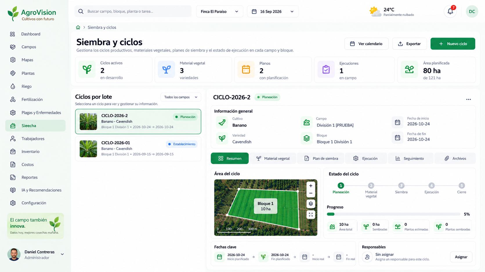
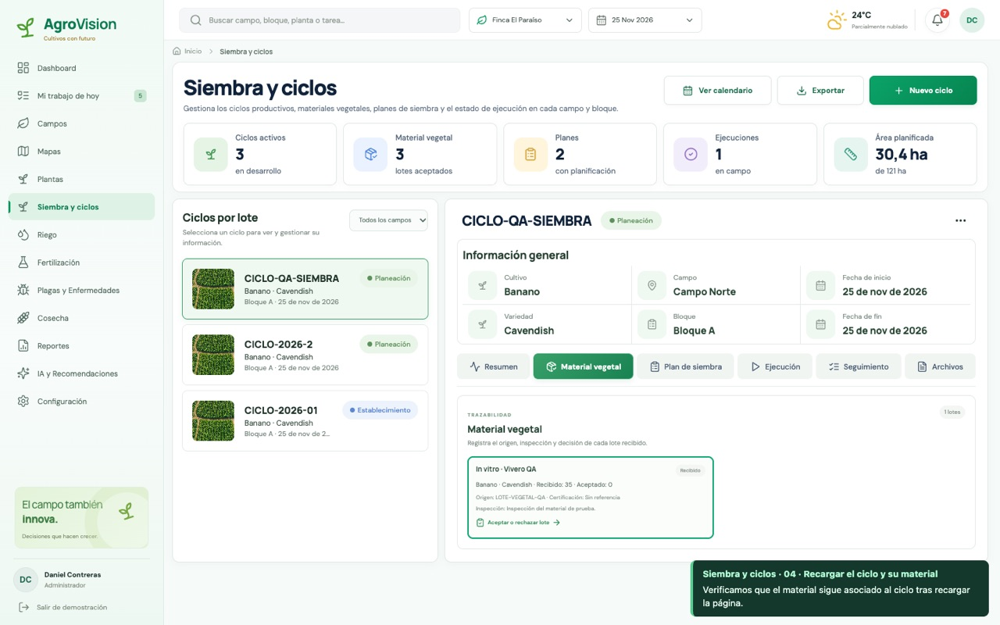
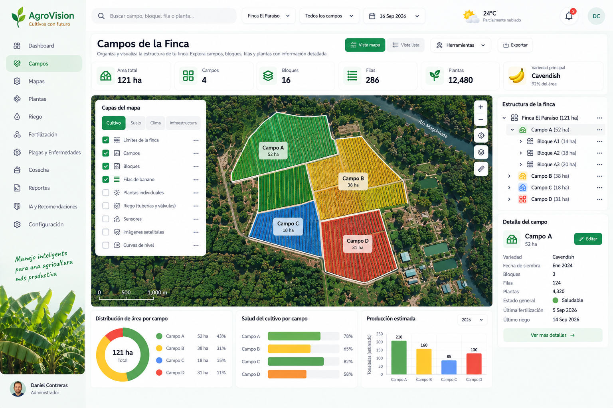
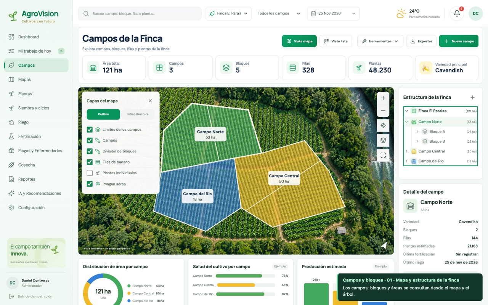
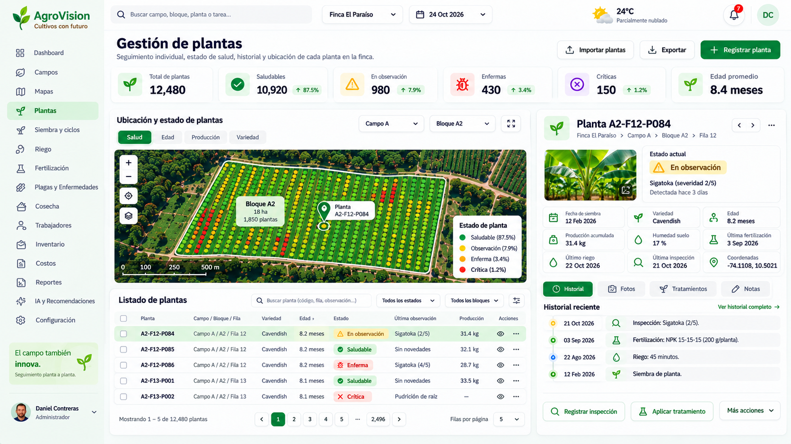
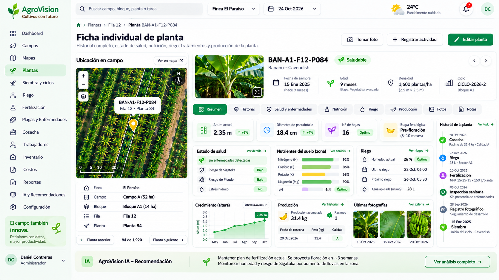
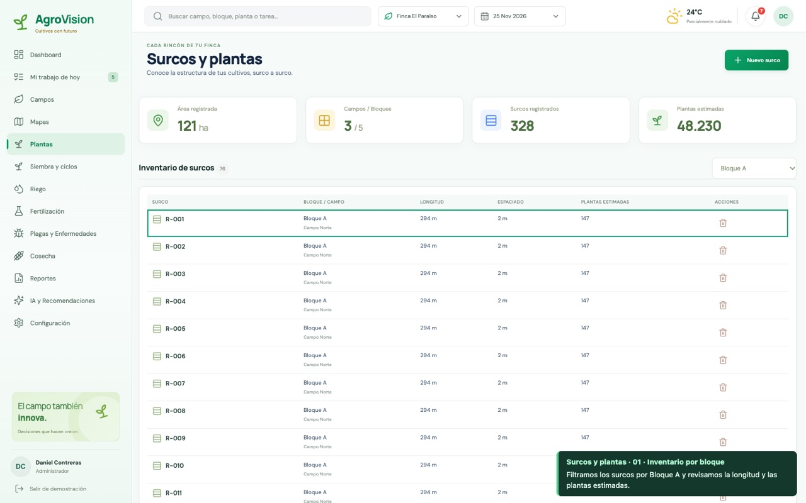
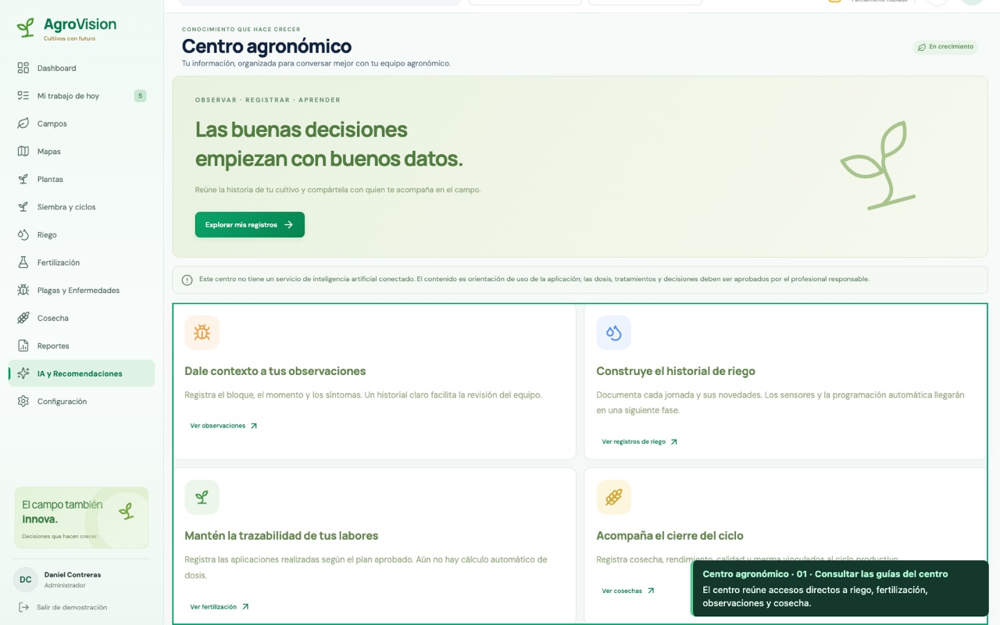

Last reviewed 2026-11-26.
This document covers fields and blocks, rows and plant positions, crop and variety catalogs, planting cycles and execution, establishment, phenology, regional calendars, agronomist access, and the Agronomic Center.
Overall coverage
The planting workflow supports the main operations from cycle creation to establishment checks and phenology. The recorded browser coverage is strongest for creating the cycle, evaluating the lot and registering planting material. Automation, catalog lifecycle, permissions and unified audit history remain open.
Status legend
Implemented — usable end-to-end functionality exists in the API, persistence, UI, and/or workflow where applicable.
In progress — the core capability exists, but important behavior or controls remain incomplete.
Missing — there is no usable end-to-end implementation yet.
Planned — missing work identified for a future delivery.
Summary
| Capability | Status | Current coverage | Remaining gap |
|---|---|---|---|
| Crop master catalog | Implemented | Farm-scoped crop records, codes, names, active state, and catalog UI. | Richer agronomic reference attributes and complete lifecycle editing/archive. |
| Crop varieties | In progress | Varieties are associated with parent crops and selectable in planting workflows. | Seed/source, maturity, resistance, supplier data, and full lifecycle management. |
| Planting cycles | In progress | Cycles store block/row, crop/variety, planting window, expected harvest, current stage, and stage history. Planned area and density belong to associated planting plans; actual area and plant counts belong to execution records. | Cycle-level area reconciliation, automatic stage transitions, replant links, and planned-versus-actual lifecycle reconciliation. |
| Site/lote evaluation | Implemented | Assessment creation, review, approval, and rejection are available in the cycle workflow. | More rule-based risk validation and richer assessment history. |
| Planting material | Implemented | Material lots can be registered and accepted or rejected before planting. | Complete lot-document lifecycle and stronger catalog validation. |
| Planting plan and execution | Implemented | Area, density, responsible person, approval, task creation, and execution are available. | Calendar- and stage-driven scheduling and broader task automation. |
| Establishment and phenology | In progress | Checks record inspected, surviving, dead, and replaced plant counts; dated stage observations and history are available. | Structured resowing follow-up, automatic replacement work, stage progression, alerts, and stronger cycle reconciliation. |
| Regional calendars | In progress | Annual/perennial rules, suggestions, preparation lead time, and cycle-window validation exist. | Reusable templates, weather context, and automatic work generation. |
| Agronomist access | In progress | AGRONOMIST role, agronomic access checks, configuration access, and approvals exist. | Capability-based, delegated, time-bound, regional, or module-specific permissions. |
| Crop scheduling automation | Missing | Approved planting plans can create tasks manually. | Automatic preparation, planting, replanting, and stage-driven task generation. |
| Crop audit trail | Missing | Farm, block, cycle, user, approval, and media references exist. | Unified immutable history of crop record changes and decisions. |
Detailed requirements matrix
| ID | Requirement | Status | Implemented evidence | Gap or next work |
|---|---|---|---|---|
| CM-01 | Store farm-scoped crop master records with code, name, and active state. | Implemented | V14__crop_variety_catalog.sql, CropCatalogController, CropCatalogService, and catalog UI. | Add richer agronomic attributes and shared reference-data support. |
| CM-02 | Store varieties and associate each variety with its parent crop. | In progress | Crop/variety persistence and API/UI association exist. | Add maturity, resistance, source, supplier, edit, archive, and approval lifecycle. |
| CM-03 | Associate blocks, planting cycles, and material lots with crop and variety records. | Implemented | Catalog identifiers are wired into block, cycle, and material-lot workflows. | Gradually make catalog references mandatory for legacy-compatible records. |
| CM-04 | Record a crop cycle by block with crop, variety, dates, area, expected harvest, and growth stage. | In progress | PlantingDtos, PlantingController, cycle persistence, and the Planting page provide the core flow. The cycle stores planting dates, expected harvest, current stage, and stage history; planned area/density are held by planting plans, and actual area/plant counts by execution records. | Add a cycle-level view and reconciliation of planned versus actual area and dates, automatic stage changes, and replant links. |
| CM-05 | Evaluate a lot/site before planting, including risks and technical approval. | Implemented | Site-assessment creation, review, approval, and rejection are available from cycle details. | Add rule-based risk validation and more complete assessment history. |
| CM-06 | Register planting-material lots and accept or reject them before use. | Implemented | Material-lot creation and decision endpoints are available in the planting workflow. | Complete document/certificate lifecycle and stronger lot-to-cycle traceability. |
| CM-07 | Create, approve, and execute a planting plan with area, density, responsible person, and target window. | Implemented | Planting-plan persistence, approval/cancellation, task creation, execution records, and UI controls exist. | Add reusable plan templates and automatic scheduling from calendar rules. |
| CM-08 | Record establishment checks, survival, mortality, replacement, and resowing follow-up. | In progress | Establishment-check endpoint and cycle follow-up UI store inspected, surviving, dead, and replaced plant counts with dated notes. | Add structured resowing follow-up, automatic replacement work generation, count reconciliation, and cycle-level alerts. |
| CM-09 | Record dated phenological stage observations for each cycle. | Implemented | Stage endpoint, stage history, and Planting page controls are available. | Add automatic progression rules and stage-based task triggers. |
| CM-10 | Maintain regional annual and perennial planting calendars by region, crop, and optional variety. | In progress | V15__agronomist_role_and_planting_calendars.sql, calendar API, suggestions, and Settings UI exist. | Add reusable regional templates, weather-aware recommendations, and automatic preparation/replanting tasks. |
| CM-11 | Give agronomists agronomic configuration and approval access without team administration. | In progress | AGRONOMIST role, FarmAccess.requireAgronomic, module checks, and role-aware Settings UI exist. | Add capability-level permissions, delegation, expiry, and region/module scope. |
| CM-12 | Generate crop-management tasks automatically from calendars, stages, approved plans, and resowing needs. | Missing | A manager can manually generate one task from an approved planting plan; repeating the request returns the plan's existing task. No calendar-, stage-, or resowing-triggered scheduler exists. | Build automatic, idempotent, dependency-aware generation with overdue/escalation handling. |
| CM-13 | Maintain a unified audit history for crop records, approvals, and workflow decisions. | Missing | Individual records retain farm/block/cycle/user references and media links. | Add immutable change history and a cycle-level audit timeline. |
| CM-14 | Organize the farm into fields and nested crop blocks, with area, polygons, crop and variety. | Implemented | Campos de la Finca displays the map, hierarchy, area summaries, activity context and list. Managers can create fields and blocks. The screen can export the visible fields to CSV. | Add in-place updates, area reconciliation against geometry, and validation of block containment and overlaps. |
| CM-15 | Register rows by block and consult their length, spacing, estimated plants, line geometry and activity history. | Implemented | Surcos y plantas provides a map, searchable inventory, record creation and deletion, and activity history by row or estimated plant position. | Add row updates and an individual plant registry with actual counts and replacement history. |
| CM-16 | Bring together actionable farm indicators and guide users to the module that owns the source records. | Implemented | Centro agronómico shows active findings, below-range moisture, soil data, and a selectable map. Its searchable built-in guides link to observations, irrigation, fertilization and harvest. | Add guide versioning, crop- and region-specific content management, and documented priority follow-up across modules. |
Implemented user-facing workflow
Siembra y ciclos lists cycles by lot and opens the selected cycle's detail. The overview shows planned dates, its block, planned area across its plans, and the target and recorded plant counts. Progress counts five documented milestones. These are site approval, accepted planting material, plan approval, recorded execution, and an establishment check. Phenological stage comes from the cycle's stage observations. The page supports the following actions.
Create and view a crop cycle.
Evaluate and approve/reject the site or lot.
Register and accept/reject planting material.
Create and approve the planting plan.
Generate work and record field execution.
Record establishment and replacement follow-up.
Update and review phenological stages.
Crop and variety catalogs and regional calendars are managed from Configuración. Ver calendario opens the regional calendar directly from the cycle workspace. The main crop-management API groups are /api/v1/catalog/crops, /api/v1/planting, and /api/v1/planting-calendars.




Campos de la Finca (#/fields) shows the field tree, field detail, list and map. Field and block polygons come from coordinates recorded on create.




Surcos y plantas (#/plants) filters rows by block and shows field, crop variety, estimated counts, line geometry, and activity history. The plant position filter uses the activity's recorded position or position range within the row. These views use the farm-scoped fields, blocks and rows API resources. Their controllers expose create, list, detail, and delete operations. Field and row screens · Field controller · Block controller · Row controller






Centro agronómico (#/insights) summarizes farm conditions from map analytics. Select a block or a layer for health, moisture or nutrients, refresh the analysis, or use the priority panel to open the source module. The search box filters the four built-in guides by title, description or link label. Agronomic Center implementation


Complete endpoint inventory
The following table lists every endpoint owned by the crop catalog, planting, and regional-calendar controllers. All routes require an authenticated session and farm access; write routes also require CSRF protection.
Crop catalog
| Method | Endpoint | Purpose |
|---|---|---|
| GET | /api/v1/catalog/crops?farmId={farmId} | List the farm's crops and varieties. |
| POST | /api/v1/catalog/crops | Create a farm crop. |
| POST | /api/v1/catalog/crops/{cropId}/varieties | Create a variety under a crop. |
Planting workflow
| Method | Endpoint | Purpose |
|---|---|---|
| GET | /api/v1/planting?farmId={farmId} | List cycles and their planting workflow data for a farm. |
| POST | /api/v1/planting/cycles | Create a planting cycle. |
| POST | /api/v1/planting/cycles/{id}/site-assessment | Record a site/lote assessment. |
| POST | /api/v1/planting/cycles/{id}/site-assessment/approve | Approve a site assessment. |
| POST | /api/v1/planting/cycles/{id}/site-assessment/reject | Reject a site assessment. |
| POST | /api/v1/planting/material-lots | Register planting material. |
| POST | /api/v1/planting/material-lots/{id}/decision | Accept or reject planting material. |
| POST | /api/v1/planting/plans | Create a planting plan. |
| POST | /api/v1/planting/plans/{id}/approve | Approve a planting plan. |
| POST | /api/v1/planting/plans/{id}/cancel | Cancel a planting plan. |
| POST | /api/v1/planting/plans/{id}/task | Generate a field task from an approved plan. |
| POST | /api/v1/planting/plans/{id}/executions | Record field execution of a planting plan. |
| POST | /api/v1/planting/cycles/{id}/establishment-checks | Record establishment, survival, mortality, or replacement follow-up. |
| POST | /api/v1/planting/cycles/{id}/stages | Record a phenological stage observation. |
Regional planting calendars
| Method | Endpoint | Purpose |
|---|---|---|
| GET | /api/v1/planting-calendars?farmId={farmId} | List calendar rules for a farm. |
| GET | /api/v1/planting-calendars/suggestions?farmId={farmId}&cropId={cropId}[&varietyId={varietyId}&year={year}] | Resolve applicable planting-window suggestions. |
| POST | /api/v1/planting-calendars | Create a calendar rule. |
| PUT | /api/v1/planting-calendars/{id} | Update a calendar rule. |
| DELETE | /api/v1/planting-calendars/{id} | Deactivate a calendar rule. |
The planting controller currently returns workflow data from the farm-level list route. There are no separate GET-by-id, update, or delete routes yet for cycles, material lots, planting plans, executions, establishment checks, or stage observations. Crop and variety records also have create/list routes only; full catalog lifecycle endpoints are part of the in-progress work.
Persistence and verification
The crop catalog, planting, and regional-calendar services use native JPA queries for their Flyway-managed tables. Approval and execution writes run in JPA transactions with version checks. JPA persistence
Tested functionality and results
| Automated test | Verified functionality | November 25, 2026 result |
|---|---|---|
| Fields and blocks walkthrough | Open the map and tree, check field detail, create a 12.5 ha field and find it in the list, then create a 4 ha block and verify its parent in the hierarchy. | 1 passed with demonstration data. Field screenshots and recording |
| Rows and plants walkthrough | Filter by block, enter the line geometry, length and plant spacing, and find the saved row by code after reload with 65 m and 33 estimated plants. | 1 passed with demonstration data. Row screenshots and recording |
| Planting and cycles walkthrough | Create a cycle with planting and expected harvest dates, save and approve the site assessment, register 35 plants with origin and health inspection notes, and check the material after reload. | 1 passed with demonstration data. Planting screenshots and recording |
| Agronomic Center walkthrough | Check the four module links, filter the guides by search and navigate to Fertilization. | Passed in the recorded module run. In the 15:51 revalidation, the heading and links were verified. The screenshot target .insights-grid timed out before search and navigation. Center screenshots, recording and failure |
| Browser regression suite and field map fixture | Open Fields, Rows and Agronomic Center without script errors or page overflow. Verify demo field creation and local reload persistence. With a simulated API, display the seven test field boundaries without observations, check valid geometry and summarized area, select a field with the keyboard and reset the map. | Relevant cases passed on desktop and mobile in the revalidation. Chrome report |
| Connected record creation and full QA farm walkthrough | Create the account and farm, field, block and row through the API. The record-creation test also saves a field activity. The full walkthrough creates the crop cycle and registers a linked harvest after irrigation and fertilization. | Passed at 14:07 on November 25 and again on November 26. The November 25 15:51 revalidation stopped at an ambiguous row selector. Earlier Chrome report · November 26 connected walkthrough · Revalidation result |
| Agricultural API and geometry serialization | Create the farm hierarchy, preserve polygon rings, line and point geometry in GeoJSON, associate events with block or row, and read a linked harvest by cycle. | Relevant API case and both geometry cases passed. API report · Geometry report |
| Farm-scoping and metric unit tests | Exclude records from other farms, retain events linked to a row, avoid counting area twice and count estimated plants only for the selected farm. | Both cases passed. Frontend unit test output |
| Agronomist and calendar integration | Assign the agronomist role, read the crop catalog, create a farm/region/crop/variety calendar rule, resolve its planting window suggestion and verify that the agronomist cannot administer farm members. | Relevant PostGIS case passed. Gradle report |
Screenshots and recordings
| Module | Step-by-step screenshots and video from the 15:02 demonstration run |
|---|---|
| Fields and blocks | Gallery · WebM |
| Rows and plants | Gallery · WebM |
| Planting and cycles | Gallery · WebM |
| Agronomic Center | Gallery · WebM · 15:51 failure screenshot |

Run the selected module suites from the repository root with the corresponding script in scripts/qa-modulos/. QA execution guide
Planned next work
Complete crop and variety catalog lifecycle and agronomic reference attributes.
Automate stage transitions and calendar-driven preparation, planting, and resowing tasks.
Add delegated and time-bound agronomist permissions. Match field and row management controls to the backend's administrator and supervisor permissions.
Add unified crop-cycle approvals, history, and change traceability.
Add field, block and row editing, geometry validation, and individual plant tracking within the row inventory.
Add a connected test for the full planting chain from plan approval through execution, establishment and dated phenology. Add coverage for calendar edits and deactivation, field exports, row position history and the Agronomic Center's block selection, layer controls and priority indicators.